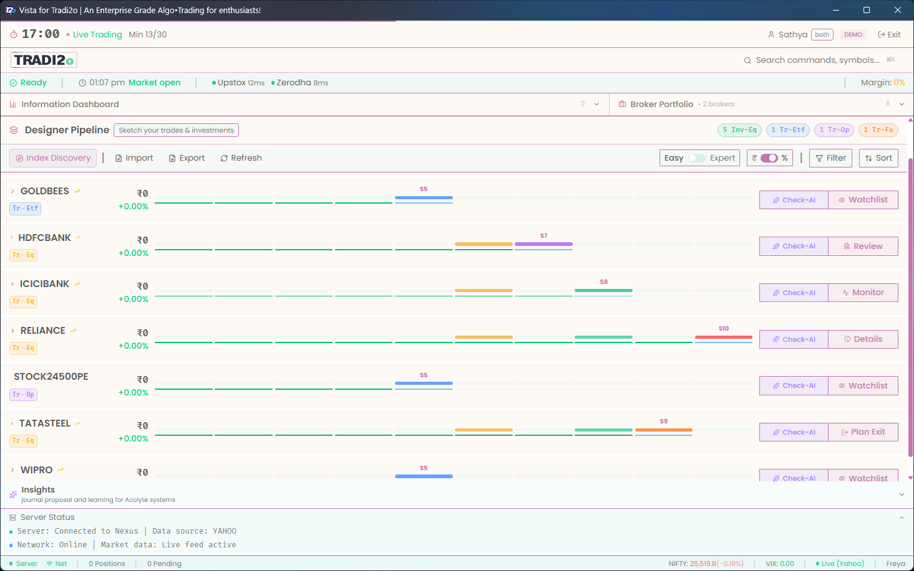
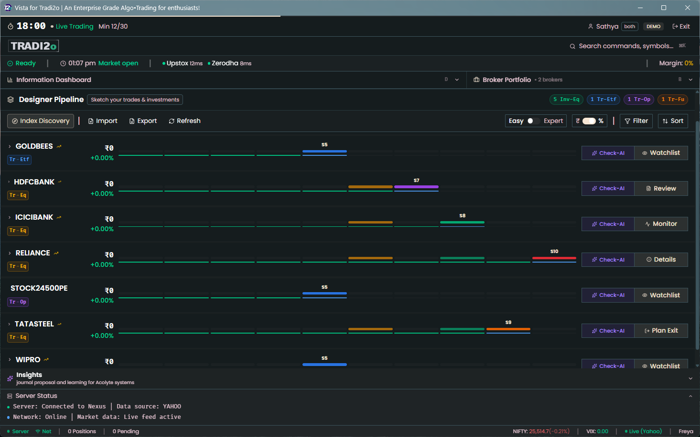

A sovereign instrument for the disciplined mind — engineered not for the market, but for the individual who demands absolute certainty in how their capital moves.
India · United States · UAE · Japan · Equity · ETF · F&O · Options
"In an era of probabilistic noise, we provide the Deterministic Anchor. The ultimate luxury in finance is not profit — it is the ability to remain placid while the machine executes your intent with mathematical certainty."Tradi2o · Capital, Engineered
Tradi2o is capital operating infrastructure. You bring the strategy. The instrument brings the execution architecture, the compliance layer, and a forensic ledger that no retail platform has ever offered.


Vista — The Command Console · Hardware-accelerated · Native desktop · Your machine · Your infrastructure · Your intellectual property stays local
Like a hand-finished watch movement, every component in Tradi2o has a singular purpose, a defined interface, and an uncompromising standard of mechanical integrity.
Every tick, every signal, every risk decision — etched into a cryptographically chained ledger with SHA-256 finality. The flight recorder of your financial life. Immutable. Reproducible bit-for-bit, years later. No retail platform has this.
A side-effect-free signal environment governed by a monolithic risk engine. Given the same market inputs, the system always produces the same decision. Not approximately — exactly. Determinism is the promise. Determinism is the product.
The first secure sandbox for Agentic Finance. Your AI proposes freely — querying live portfolio state, synthesising macro data, generating strategy parameters. The deterministic core remains the sole authority to execute. The AI is the brain. Tradi2o is the spine.
Vista runs natively on your hardware. Your strategy parameters never leave your machine. Custodian enforces multi-jurisdictional compliance — SEBI, SEC/FINRA, DFSA, FSA — in code, at every single order submission, without exception.
When a trade is questioned — by a broker, a regulator, or yourself — you open the Jurno ledger. It shows exactly what data the system saw, exactly what signal was generated, exactly what compliance checks ran, and exactly what order was routed.
Not approximately. Exactly. Replayed from a cold copy, years later, it produces bit-identical results. This is forensic truth.
Every AI trading product on the market is a language model with direct broker API access. It hallucinates. It drifts. It loses money with confidence. Tradi2o is the opposite architecture — and the only one with a forensic record of every decision made along the way.
Via the Model Context Protocol, any capable AI agent can query live portfolio state, synthesise macro data, request historical analysis, and propose strategy parameters. It sees patterns humans miss. It has full research access. It generates ideas at scale.
What it cannot do: touch a broker. Submit an order. Move a single rupee.
Every order intent passes through Maven's capital and risk guards, Custodian's regulatory compliance layer, and Apollon's exact cost calculation before it is acknowledged. If it passes, it is written to Jurno before it reaches a broker. If it fails, the rejection itself is recorded.
The AI cannot hallucinate past this. The architecture does not permit it.
Discipline is not a human trait — it is a system property. Tradi2o enforces this sequence on every trade, every session, by architecture.
Retail tools go down on expiry day. Institutional tools cost tens of lakhs and require colocation. Between them is a precise gap that serious traders have been navigating alone.
Each market has a dedicated Custodian plugin enforcing its own regulatory ruleset in code — SEBI, SEC/FINRA, DFSA, FSA — at every order submission, without exception.
NSE · BSE · SEBI compliance · Equity, ETF, F&O · Zerodha, Upstox, Groww
SEC · FINRA · Equities · ETF · Options · 3–5 brokers per cycle
DFSA · ADX · DFM · Family office and prop desk focus
FSA · TSE · Precision execution for systematic principals
Whether you are commissioning your first environment today, or you are still building toward that moment — we are glad you found this page. The instrument will be here when you arrive. Reach out, and we will have a quiet conversation about where you are and where you are going.
Begin the Inquiry
No pitch. No pressure. A conversation.
We speak with traders, prop desks, and family offices — wherever you are in the journey.